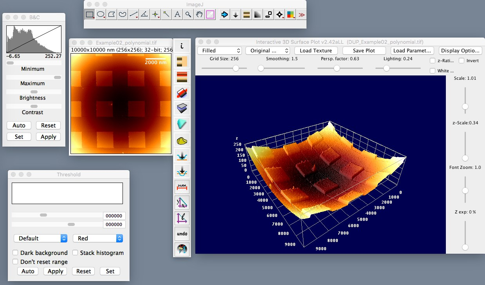
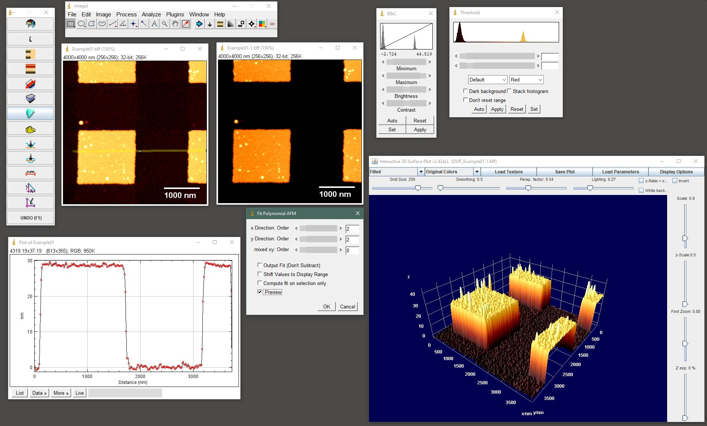

Plugins to read and eleborate AFM data in ImageJ
AFMiJ requires a working Java >=1.8 installation. On Linux, openjdk is required.
unzip the distribution
there are OS specific launchers
Quick guide
Screenshots

